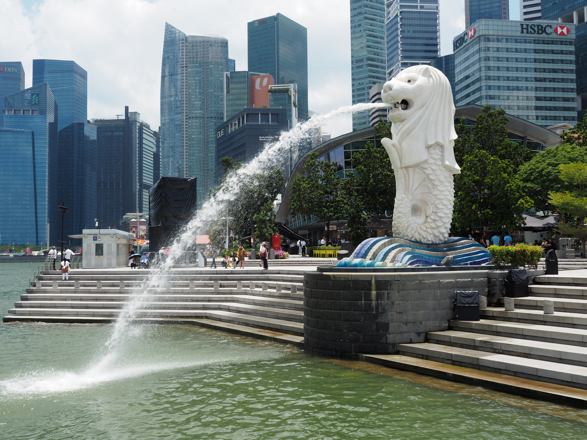

Introduction
Hong Kong and Singapore, cities with well-developed economies that earned them a title as two of the Four Asian Tigers. Deals are made almost every hour of the day in these cities where people work for over 2,000 hours a year. Though their economies are rather stable, the free time people get is just too little.
As the scales tip to one side, the money outweighs the people's well-being and the balance is destroyed. People have been working far too much and they don't have much time to spend with their friends and family. Also, the stress from their jobs may affect their health, causing consequences that cannot be overlooked.
In our project, we aim to compare the work-life balance of Singapore and Hong Kong. Though it is evident that citizens both regions are putting too much time into their work, we will see which city has a bigger problem and aim to find a solution to it.
Definitions
Quality of Life
According to the World Health Organization (WHO), quality of life is defined as "the individual's perception of their position in life in the context of the culture and value systems in which they live and in relation to their goals." There are a lot of different ways to measurement the quality of life. One of the most common is the OECD's Better Life Index. This Index allows us to compare well-being across countries, based on 11 topics the OECD has identified as essential, in the areas of material living conditions and quality of life. These topics include housing, jobs, education, civic engagement, life satisfaction, work-life balance, income, environment, community, safety and health.
Indicators
In our study, we are concerned with the issue of work-life balance. In a developed society, finding a suitable balance between work and daily living is a challenge that all workers face. Families are particularly affected. The ability to successfully combine work, family commitments and personal life is important for the well-being of all members in a household.
We will use two indicators to measure the work-life balance of citizen: 'time spent on work' and the 'time devoted to leisure and personal car'.
An important aspect of work-life balance is the amount of time a person spends at work. Evidence suggests that long work hours may impair personal health, jeopardise safety and increase stress. For the indicator "time spent in work", we are going to measure the time spend in working/studying on average per day.
Furthermore, the amount and quality of leisure time (socialising with friends and family, hobbies, games, computer and television use, etc.) and personal care ( eating, sleeping, etc.) is important for people's overall well-being, and can bring additional physical and mental health benefits. For the indicator of 'time devoted to leisure and personal care', we are going to measure the time spent on activities of leisure and personal care.